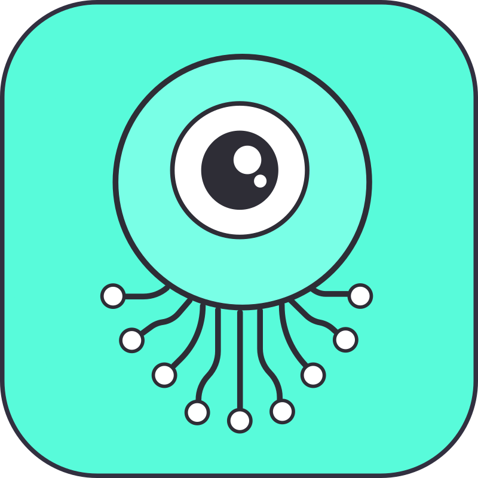

Skip to content

Kreuzcrawl
Rust API Reference
Search
kreuzcrawl-dev/kreuzcrawl
Home
Getting Started
Features
Concepts
Guides
CLI
API Reference
Comparisons
Changelog
Contributing
Kreuzcrawl
kreuzcrawl-dev/kreuzcrawl
Home
Getting Started
Features
Concepts
Guides
CLI
API Reference
API Reference
Rust
Python
TypeScript
Go
Java
C#
Ruby
PHP
Elixir
WASM
C (FFI)
REST API
MCP Tools
Configuration
Types
Errors
Comparisons
Changelog
Contributing
Home
API Reference
Rust API Reference
¶
Under Construction
This page is being written. Check back soon.
Back to top